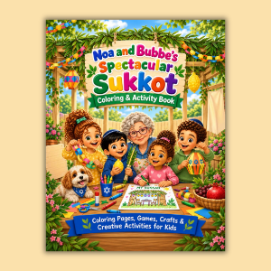

Coloring + Activity Book
Noa and Bubbe’s Spectacular Sukkot Coloring & Activity Book
Color, cut, create, and celebrate Sukkot with coloring pages, games, paper chains, and crafts for children.

Color, cut, create, and decorate
Explore Sukkot through coloring pages and hands-on activities. Children can learn about the lulav and etrog, finish patterns, count fruit, create a thankful tree, design their own sukkah, and make paper chains and decorations.
Includes imaginative coloring scenes inspired by Noa and Bubbe’s Sukkot story.